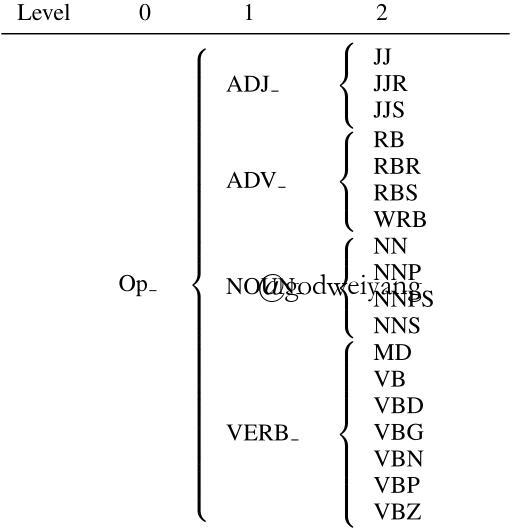
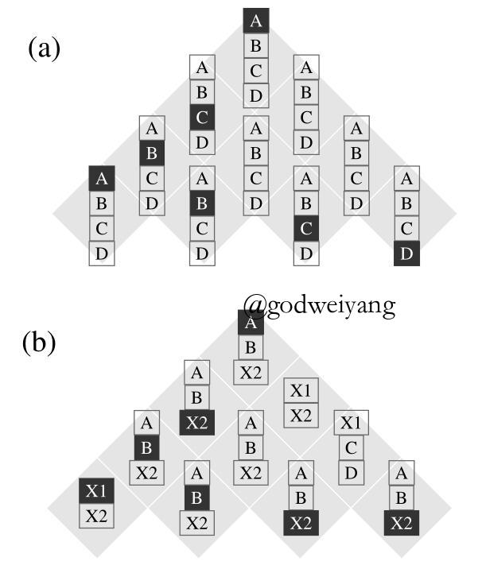
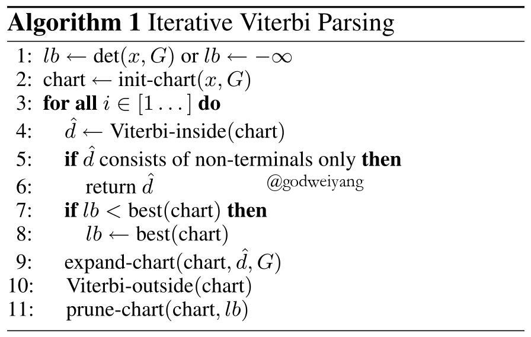
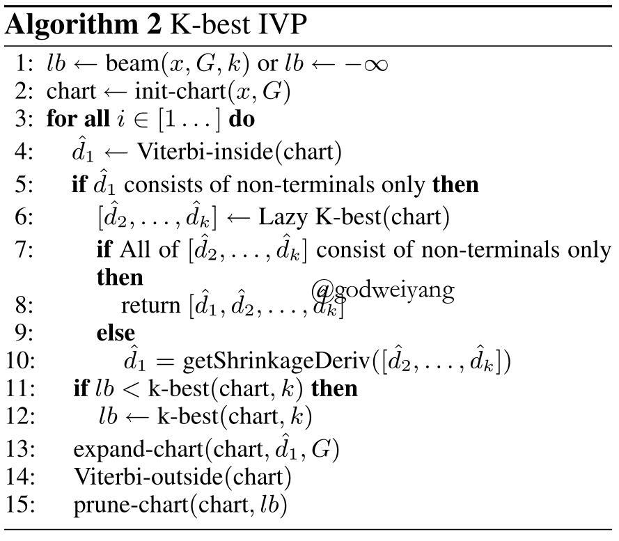
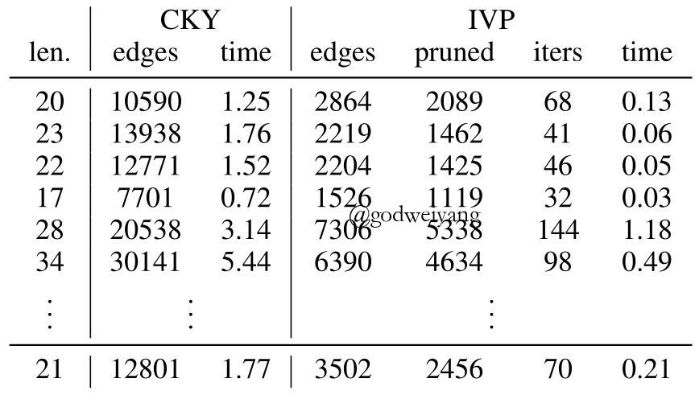
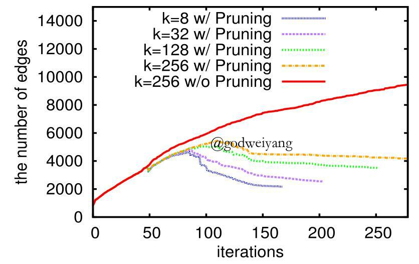

本文链接：EACL17
介绍
CKY算法或维特比inside算法是成分句法分析的主要方法之一，但是当产生式数量特别大之后，时间复杂度也线性增大。可行的一种方法是剪枝，但是剪枝会造成准确率的下降。所以本文就提出了一种迭代的维特比句法分析算法，通过剪枝去除掉没用的边。实验表明，时间上加快了一个数量级，但是本文并没有说准确率怎么样。。。
本文用到的inside和outside算法之前已经介绍过了，详见PCFG中inside和outside算法详解。
算法框架
分层聚类
首先提出分层聚类的概念。

如上图所示，原来的类别标记有很多，将他们聚类成几个小类，再将这几个小类聚成更小的类，依次下去，最后类别标记会少很多很多。

以上图为例，，聚类之后的分析表为b图，原始的分析表为a图，聚类之后的表（下面叫粗表）b唯一对应了聚类之前的表（下面叫原始表）a，而反过来原始表a能对应多种不同的粗表b。
形式化定义
我们将类别分为层，分别表示为，那么第层的类别集合就是原始的类别集合，而到层的类别就称之为收缩符号。
对于，我们定义，其中就是的一个子集。该式将中的一个类别映射为了中所有聚类为的类别集合。
举个例子吧，在第一张图中，。如果，那么。
那么对于，我们定义产生式的概率为：
\[\log q({X_i} \to {X_j}{X_k}) = \mathop {\max }\limits_{\scriptstyle A \in {\pi _{i \to m}}({X_i})\atop{\scriptstyle B \in {\pi _{j \to m}}({X_j})\atop\scriptstyle C \in {\pi _{k \to m}}({X_k})}} \log q(A \to BC)\]
也就是说，粗表中的每一棵句法树都给出了它在原始表中的句法树的分数的上界，通俗说就是，如果把粗表中的收缩符号全部替换成原始表中的符号，那么新的句法树的分数一定会小于等于粗表中的句法树。
引理
如果粗表中的最优句法树不包含任意收缩符号，那么它等价于原始表中的最优句法树。
证明：
令等于原始表中的句法树集合，等于没有出现在粗表中，但是出现在原始表中的句法树集合，等于粗表中的句法树集合。
那么对于每一个句法树，都存在唯一的句法树与之对应。所以可以推出：
\[\forall d \in Y,\exists d’ \in Y’’,s(d) \le s(d’) < s(\hat d)\]
这就意味着也是原始表中的最优句法树。
伪代码

初始化为句法树的最优得分或者负无穷，其中
det()用来求解句法树的最优得分，但是没有必要真的求出最优句法树，只需要在每个结点处保留得分最高的边即可。尽管这样得出来的句法树基本不是最高的，但是能够缩小范围即可。init-chart()首先初始化分析表，全部初始化为收缩符号。然后开始迭代过程，首先执行维特比inside算法，也就是CKY算法
Viterbi-inside()，得到最优句法树。如果最优句法树不含有任意收缩符号，那么迭代结束，直接返回该句法树。
否则的话，更新为最优句法树的分数
best()。expand-chart()将所有收缩符号替换为下一层的收缩符号。Viterbi-outside()计算outside值。prune-chart()进行剪枝，过滤掉无用的边。
剪枝过程
算法的重要部分就是prune-chart()剪枝过程，这里要详细讲一下。
对于一条边，定义为含有边的句法树的最大分数。那么如果
，这条边就没有搜索的必要了，可以从分析表中去掉。
但是每次迭代都从原始表中计算值太麻烦了，可以在每次迭代的时候计算粗表中的值：
\[\alpha \beta (e) \le \hat \alpha (e) + \hat \beta (e) = \hat {\alpha \beta} (e)\]
所以当时，从分析表中删除这条边。虽然搜索空间减少了，但是不影响算法的迭代轮数。
虽然在expand-chart()这一步要扩展收缩符号为下一层所有符号，但是实际运行起来时间比普通的CKY算法大大减少。
K-best扩展

基本框架和1-best是一样的，主要思路就是首先求出最优句法树，如果包含收缩符号，那么就下面步骤和1-best一样。否则的话求出后面k-1棵最优的句法树，如果都不包含收缩符号，直接返回k-best棵句法树。否则从中选出最好的一棵含有收缩符号的句法树，下面的步骤和1-best一样。
实验
数据集用的是PTB中长度小于35的句子。

上面这张表显示出，IVP算法的边的数量远远小于CKY算法，虽然迭代次数大大增加，但是总时间仍然远远小于CKY算法，而且边数减少了之后inside和outside算法的时间可以忽略不计了。最后一行是平均数据。
上图说明了，当k较小时，IVP算法时间快于普通的k-best算法，但是k大了之后就变慢了，原因如下图所示：

当k太大了之后，lb不能很好的得到最优得分的下界，所以无法有效地剪枝。而且k越小，算法收敛的也越快。
结论
提出了K-best IVP算法，基本框架还是inside-outside算法。
但是全文自始自终没有提及算法的准确率，感觉应该不是很高，不知道有没有又高又快的优化方法？